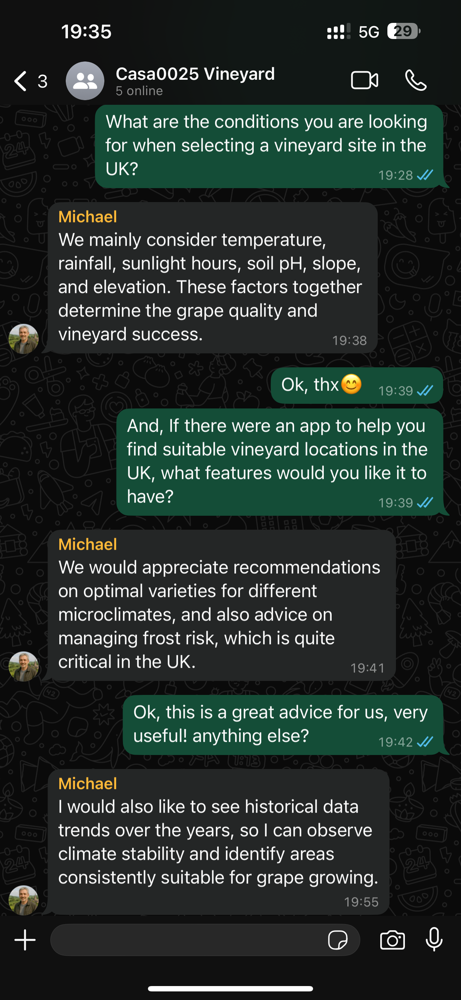
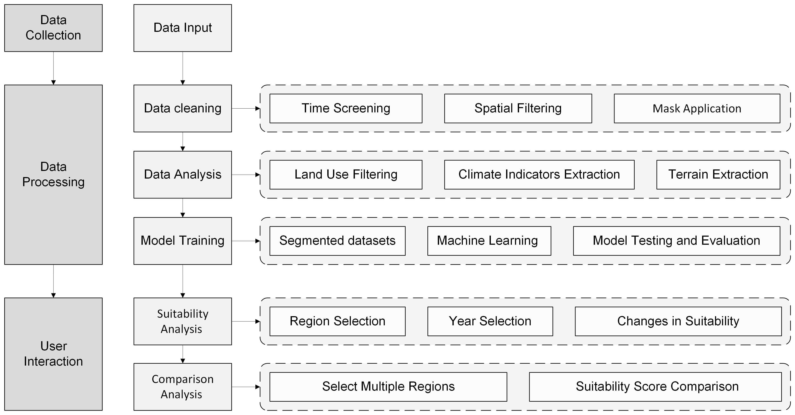
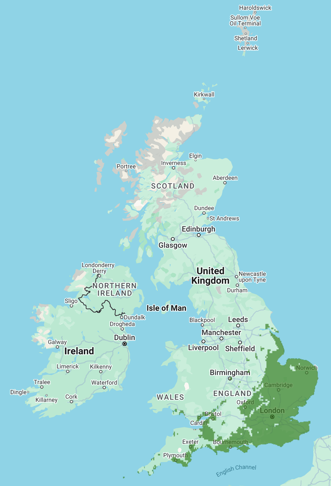
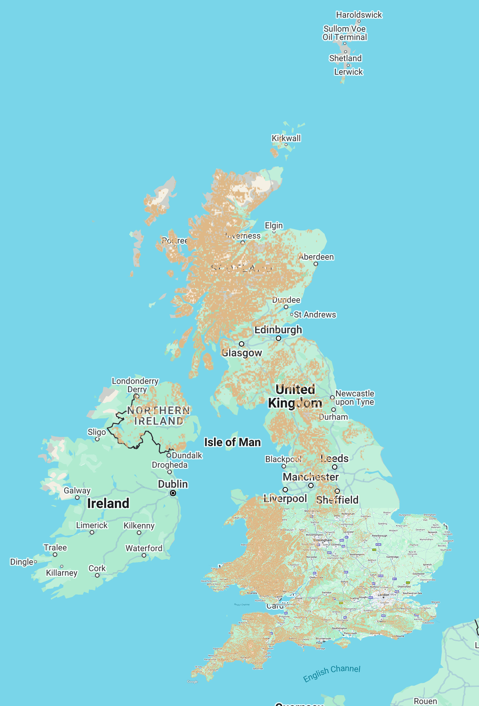
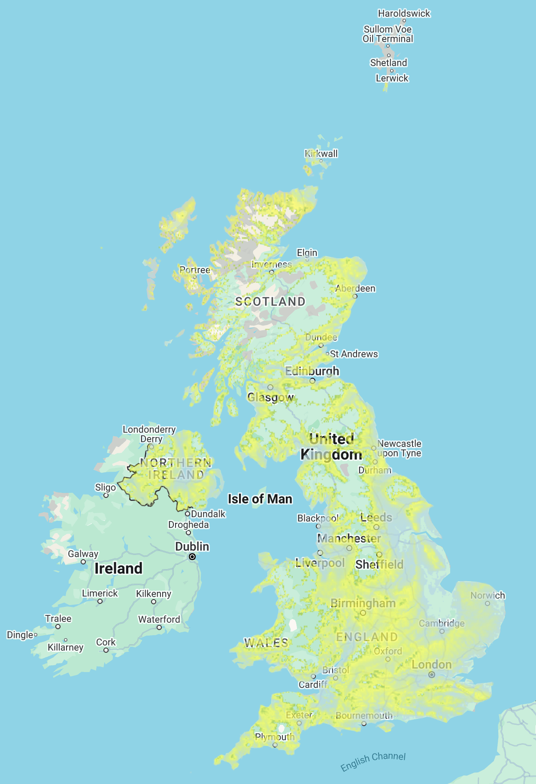
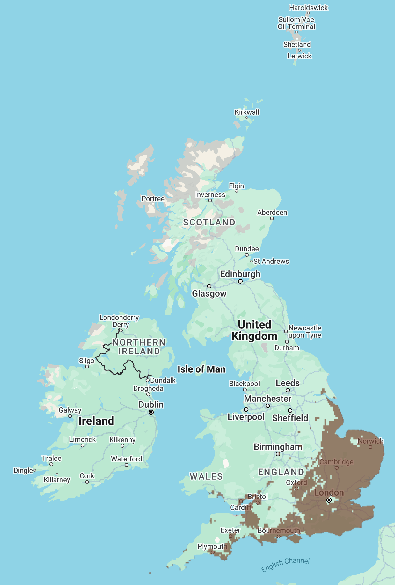
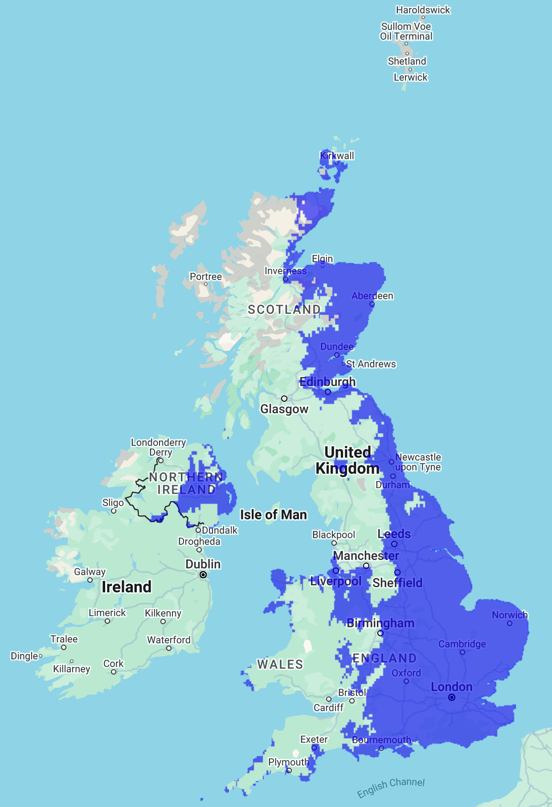
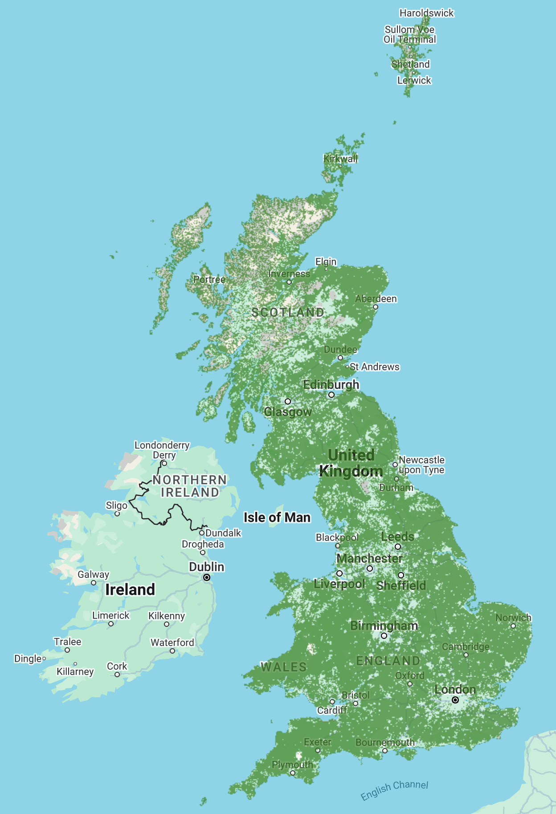

CASA00025 Group Project
Grape Cultivation Analysis Toolkit
1. Project Summary
Fill in the sections below to provide a brief summary of your project. Each section should have no more than 100 words. Do not edit any of the headings.
1.2 Introduction
1.2.1 Background
Recent studies have shown that between 1981 and 2018, growing season temperatures in key UK viticulture regions increased by approximately 1°C, with GST values now exceeding 14°C, facilitating the expansion of vineyards and the diversification of grape varieties (Alistair Nesbitt et al. 2022). Climate change is projected to further alter temperature, precipitation, and seasonal patterns, impacting the spatial distribution, productivity, and sustainability of viticulture (Fraga et al. 2013). These environmental shifts highlight the urgent need for dynamic, data-driven tools that integrate climatic and topographic variables to support vineyard planning and agricultural decision-making under future climate scenarios.
1.2.2 Literature review
Climate change has significantly impacted viticultural suitability, creating new opportunities for UK wine production. Recent projections show that warming trends will improve conditions for varieties like Pinot Noir in the UK by 2040 (Alistair Nesbitt et al. 2022). Suitability models suggest increasing investment potential and climate resilience in England and Wales (A. Nesbitt, Dorling, and Lovett 2018). Early discussions on the evolution of UK wine quality laid a foundation for understanding these shifts (Unwin 1991). Broader European analyses reveal uncertainties in future viticultural zoning under climate scenarios (Fraga et al. 2013). Remote sensing studies further highlight the importance of multi-source environmental data in capturing climate-driven suitability changes (Bai et al. 2022). Building on these insights, our project integrates remote sensing datasets with machine learning techniques to dynamically map and predict vineyard suitability, providing a scalable, data-driven tool for spatial analysis under changing environmental conditions.
1.3 Problem Statement
This project addresses the challenge of identifying optimal regions for grape vineyard cultivation in the United Kingdom by integrating multiple environmental and climatic factors. Traditional approaches often rely on expert intuition or static suitability maps, lacking dynamic, data-driven analysis. In the context of evolving climatic conditions, there is a critical need for an interactive tool that combines historical records, remote sensing data, and machine learning techniques. Our application enables users to dynamically assess vineyard suitability across spatial and temporal scales, providing a more adaptive, evidence-based framework for land use planning and agricultural investment decisions.
1.4 End User
The application is designed for vineyard developers. It enables users to explore vineyard suitability across the UK, making predictions based on environmental factors such as temperature, elevation, and slope. By offering spatial and temporal insights, the tool helps optimize land selection, support climate adaptation, and reduce investment risks. Its intuitive interface ensures accessibility even for users without technical GIS expertise. Additionally, by interviewing investors interested in establishing vineyards in the UK, we collected key insights into ideal growing conditions. Investors prioritize stable climates and seek regions suitable for cultivating high-quality grape varieties, further informing the application’s focus and design.

1.5 Data
| Variable | Dataset Source |
|---|---|
| Temperature | MODIS/006/MOD11A2 — MODIS Land Surface Temperature and Emissivity |
| GST (Growing Season Temperature) | TerraClimate — IDAHO_EPSCOR/TERRACLIMATE |
| GDD (Growing Degree Days) | TerraClimate — IDAHO_EPSCOR/TERRACLIMATE |
| GSP (Growing Season Precipitation) | TerraClimate — IDAHO_EPSCOR/TERRACLIMATE |
| Slope | USGS/SRTMGL1_003 — NASA SRTM Digital Elevation 30m |
| Elevation | JAXA/ALOS/AW3D30/V2_2 — ALOS |
| Existing Vineyard | Exported from OpenStreetMap (OSM) |
| Land Use | Land Cover Map 10m — UK Centre for Ecology & Hydrology |
1.6 Methodology

Environmental datasets are first preprocessed by applying thresholds for temperature, precipitation, elevation, solar radiation, and vegetation cover. Key environmental features are then stacked, and stratified sampling is used to generate positive (vineyard) and negative (unsuitable) training data for a Random Forest classifier, effectively distinguishing suitable and unsuitable areas. The model predicts continuous suitability scores, identifying regions with scores above 70% as highly suitable, and achieves high predictive accuracy validated through cross-validation. Predictions support county-level selections, user-defined custom polygons, and regional comparisons. Time-series analyses from 2010 to 2023 allow users to explore spatial and temporal shifts in vineyard suitability under changing environmental conditions.
1.7 Interface
The application features a modular, panel-based interface designed for clarity, interactivity, and user-friendliness. Module 1 allows users to select any UK county to view historical trends in vineyard suitability. Module 2 enables users to draw custom areas directly on the map and run machine learning-based suitability predictions for those regions. Module 3 supports side-by-side comparison between two user-defined regions to facilitate comparative spatial analysis. Results are displayed through interactive maps, dynamically updating area charts, and easy-to-read statistics. The entire interface is built using Earth Engine’s UI tools to ensure smooth interaction even with large datasets.
2 The Application
Replace the link below with the link to your application.
3. How it Works
3.1 Data Preprocessing
var countries = ee.FeatureCollection("USDOS/LSIB_SIMPLE/2017");
var UK_boundary = countries.filter(ee.Filter.eq("country_na", "United Kingdom"));
Map.centerObject(UK_boundary, 6);This project focuses on the United Kingdom. Five environmental variables were selected based on literature thresholds:
GST 14.1–15.5°C (Nesbitt et al., 2022),
GDD 974–1223°C·days (Nesbitt et al., 2022),
GSP 273–540mm (Nesbitt et al., 2022),
Slope 5–10% (Fraga et al., 2018),
Elevation 0–220m (Gladstones, 1992).
Landsat 8 imagery was clipped to the UK boundary and masks were generated with moderate threshold adjustments.
var gstMask = gst.gte(14.0).and(gst.lte(16.0));
var gddMask = gdd.gte(950).and(gdd.lte(1250));
var gspMask = gsp.gte(250).and(gsp.lte(600));
var slopeMask = slope.gte(2).and(slope.lte(15));
var elevationMask = elevation.gte(5).and(elevation.lte(250));





Land cover was reclassified to retain grassland, shrubland, and cropland.
All masks were combined using logical AND operations to select suitable areas.
3.2 Machine Learning Modeling
Environmental factors (GST, GDD, GSP, slope, elevation, aspect, latitude) are extracted for the selected region and year from TerraClimate and SRTM datasets. These variables capture key climatic and topographic conditions affecting vineyard growth.
var factors = GrapeML.computeEnvironmentalFactors(region, year);A binary suitability mask is generated by applying defined threshold filters to the extracted factors. This step pre-screens environmentally favorable zones before machine learning.
var suitabilityMask = GrapeML.computeSuitabilityMask(factors);Positive samples are randomly generated within vineyard areas, while negative samples are drawn from unsuitable regions identified by the inverted mask. Samples are labeled and split randomly into 70% training and 30% testing subsets to ensure robust model evaluation.
var positivePoints = ee.FeatureCollection.randomPoints({region: vineyards.geometry(), points: 200});
var negativePoints = ee.FeatureCollection.randomPoints({region: region, points: 400});A Random Forest classifier with 50 trees is trained on the training data.
var classifier = ee.Classifier.smileRandomForest({numberOfTrees: 50}).train({...});The trained classifier predicts a suitability probability surface across the study region. Pixels with scores above 0.7 are identified as highly suitable for vineyard development.
var suitabilityScore = featureImage.classify(probabilityClassifier);If sample generation is insufficient, the basic environmental mask serves as a fallback to maintain prediction stability. ### 3.3 Function 1 :
3.3.1 xxxxx
xxxxx
3.3.2 xxxxx
xxxxx
3.4 Function 2 :
3.4.1 xxxxx
xxxxx
3.4.2 xxxxx
xxxxx
4. Interaction Design
Feedback: The interface shows loading prompts like “Analyzing region…” to keep users informed of progress. Usability: The intuitive layout, with a fixed right panel and bottom-left legend, ensures easy navigation. Custom area selection includes clear instructions for quick user onboarding. Aesthetics: Functions are clearly separated, and high-contrast map layers, interactive charts, and color-coded maps improve data visualization. Consistency: Consistent styles across layers, buttons, and interactions, with uniform color schemes in the legend, aid map interpretation. Flexibility: Supports predefined county selections and user-drawn areas, with flexible switching between single-year and multi-year views for analysis.
5.Limitations
Asynchronous Loading: In order to increase the loading speed, the asynchronous loading method is chosen, but this requires a high level of user operation. The user needs to wait for the current operation to finish loading before proceeding to the next operation, otherwise it may lead to the error of loading the result multiple times.
Insufficient machine learning training data: The current training sample size is relatively limited, which may lead to a decrease in prediction accuracy.
Lagging vineyard area data: The existing vineyard area data from OSM (Open Street Map) has some lag and incompleteness, which may affect the accuracy of the results.
6.Future work
Expanding site selection factors: When selecting sites and comparing sites, more factors beyond the vineyard environment need to be considered, such as accessibility, regulations, and the surrounding environment. Grape Variety Classification: Implement classification of different grape varieties to enable more targeted vineyard area analysis and selection.